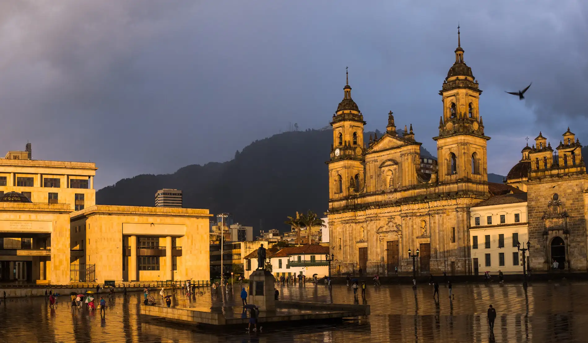
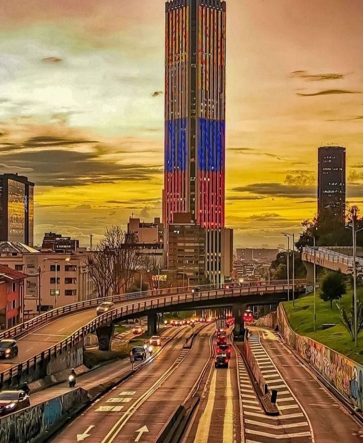
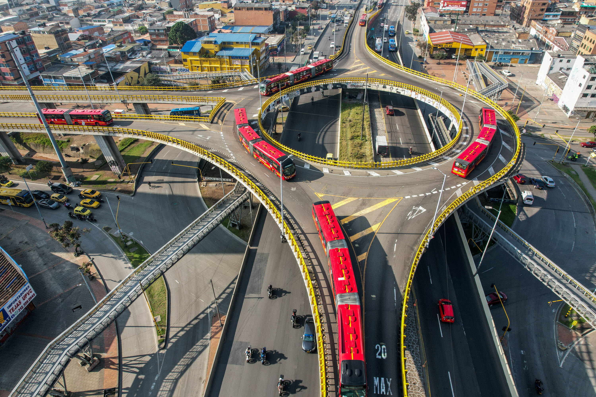

Bogotá

Bogotá, capital de Colombia, se posiciona como el principal centro económico, político y administrativo del país. Con una población de millones de habitantes, la ciudad concentra una gran parte de la actividad empresarial, financiera y académica. Uno de los principales retos que enfrenta Bogotá es la movilidad. El alto número de vehículos y el crecimiento urbano han generado congestión en las principales vías, afectando la calidad de vida de los ciudadanos. Como respuesta, se están desarrollando proyectos de infraestructura y transporte que buscan mejorar la movilidad, incluyendo sistemas de transporte masivo y ampliación de vías. Otro tema importante es el acceso a servicios públicos, especialmente el agua. La ciudad se prepara para posibles fenómenos climáticos que podrían afectar el suministro, por lo que se han implementado medidas de prevención y optimización de recursos. En el ámbito económico, Bogotá continúa liderando el país, con un alto número de empresas, universidades y oportunidades laborales. La ciudad también se destaca por su dinamismo cultural, con eventos, museos y actividades que atraen tanto a residentes como a turistas. A pesar de los desafíos, Bogotá sigue siendo una ciudad clave para el desarrollo del país y un referente en innovación y crecimiento urbano.
Economía
Su economía se basa en:

- Servicios financieros
- Comercio
- Tecnología
- Educación
- Sector inmobiliario
Infraestructura y movilidad

Uno de los mayores retos de Bogotá es la movilidad. El crecimiento urbano acelerado ha generado congestión vehicular constante. Para enfrentar esta situación, se desarrollan proyectos como:
- Construcción del metro
- Ampliación de vías principales
- Mejoras en transporte público